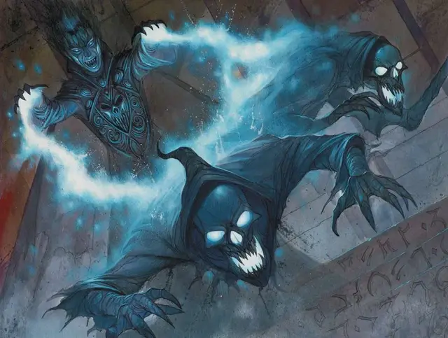

Дэтлок умертвие
Deathlock Wight
Средняя Нежить, нейтрально-злая

Класс Доспеха 12 (15 с магическим доспехом)
Хиты 37 (5к8 + 15)
Скорость 30 футов
| мод | спас | ||
|---|---|---|---|
| СИЛ | 11 | +0 | +0 |
| ЛОВ | 14 | +2 | +2 |
| ТЕЛ | 16 | +3 | +3 |
| мод | спас | ||
|---|---|---|---|
| ИНТ | 12 | +1 | +1 |
| МДР | 14 | +2 | +4 |
| ХАР | 16 | +3 | +3 |
Навыки Восприятие +4, Магия +3
Сопротивление урону некротическая энергия; дробящий, колющий, рубящий от немагических атак
Иммунитет к урону яд
Иммунитет к состояниям отравление, истощение
Чувства тёмное зрение 60 футов, пассивное Восприятие 14
Опасность 3 (700 опыта)
Бонус мастерства +2
Особенности
Языки. : Языки, что знал при жизни
Врождённое колдовство. Врождённое колдовство умертвия основывается на Харизме (Сл спасброска от заклинания 13). Оно может накладывать следующие заклинания, не нуждаясь ни в материальных, ни в вербальных компонентах:
• Неограниченно: обнаружение магии [detect magic], маскировка [disguise self], доспехи мага [mage armor];
• 1/день каждое: ужас [fear], удержание личности [hold person], туманный шаг [misty step];
Чувствительность к солнечном свету. Находясь на солнечном свету, умертвие совершает с помехой броски атак и проверки Мудрости (Восприятие) основанные на зрении.
Действия
Мультиатака. Умертвие совершает две атаки Гиблыми Снарядами
Гиблые снаряды. Дальнобойная атака заклинанием: +5 к попаданию, дистанция 120 футов, одна цель. Попадание: 7 (1к8 + 3) урона некротической энергией.
Вытягивание жизни. Рукопашная атака оружием: +4 к попаданию, досягаемость 5 футов, одно существо. Попадание: 9 (2к6 + 2) урона некротической энергией. Цель должна преуспеть в спасброске Телосложения с Сл 13, иначе её максимальное значение хитов уменьшится на количество, равное полученному урону. Это уменьшение длится до тех пор, пока цель не закончит продолжительный отдых. Цель умирает, если этот эффект уменьшает её максимальное значение хитов опустится до 0. Гуманоид, убитый этой атакой, спустя 24 часа восстаёт из мёртвых в качестве зомби и находится под контролем умертвия, если только гуманоида не вернут к жизни или его тело не уничтожат. Умертвие может одновременно держать под контролем не больше 12 зомби.
Описание
Лишённый большей части своей магии дэтлок умертвие находится в состоянии между колдуном, которым он был, и умертвием, - это особое наказание от некоторых покровителей и некромантов.